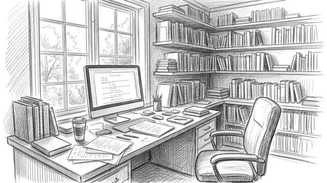
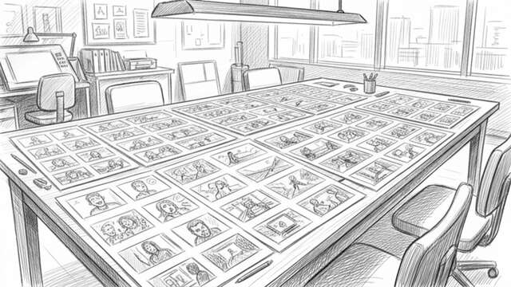
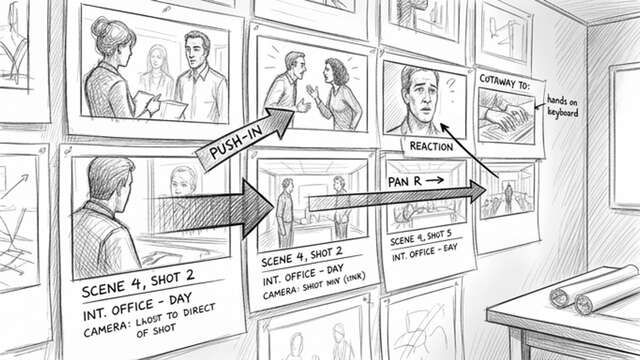
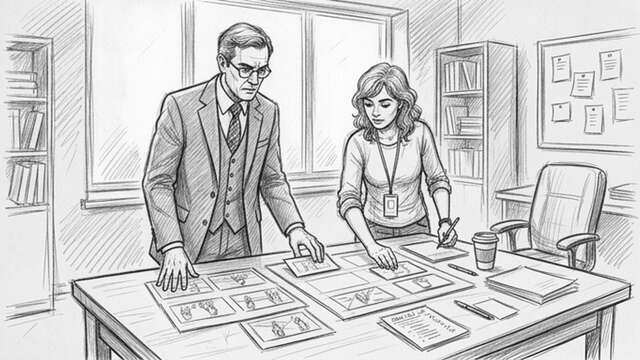

Here is the same branch by abstraction idea told as a storyboard room metaphor.




Picture a script room after the coffee has gone cold. The writer has already done the hard part: sluglines, action lines, dialogue, the whole thing. The director and storyboard artist then turn that text into thumbnail panels, one beat at a time.
1. Write the script
The scene exists as words. The room is quiet, and the pages carry the structure: who enters, what changes, and what matters next.
2. Break it into beats
A page becomes a sequence of moments. A close-up, a reaction, a cutaway, an entrance. The story starts to show its shape.
3. Draw the panels
The thumbnails arrive. Each panel captures just enough of the moment to make the scene readable without over-explaining it.
4. Add camera language
Arrows, framing notes, and shot labels appear around the panels. The visual system underneath the story becomes explicit.
5. Rework without rewriting
The sequence can be redrawn, reordered, or tightened while the underlying story stays intact. The representation changes; the premise does not.
6. Retire the rough draft
Once the storyboard holds together, the earlier working assumptions can be put away. The finished visual plan carries the production forward.
Tools such as Boords and StudioBinder already support script-to-storyboard workflows, which makes this metaphor feel closer to normal pre-production than it did a few years ago.